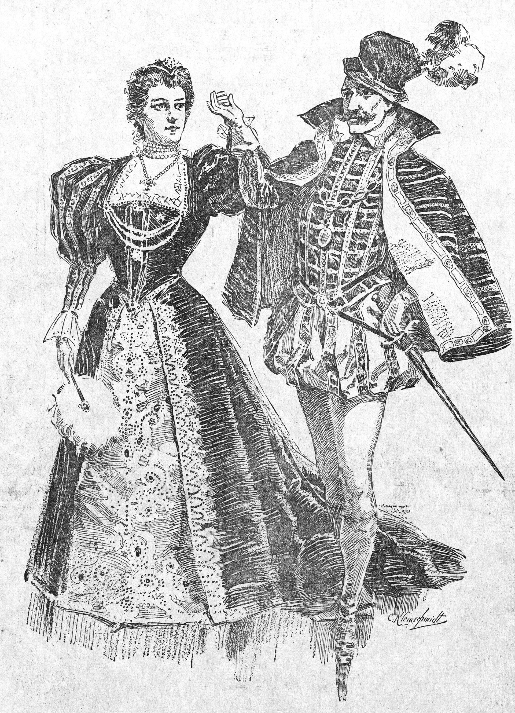

For Marx, class is the fundamental social division and the engine of historical change. Every society organized around private ownership of the means of production will divide into those who own, the ruling class, and those who do not, the exploited class. The specific form this division takes varies across epochs: masters and slaves in the ancient world, lords and serfs in feudalism, bourgeoisie and proletariat in capitalism, the argument you read last week in the Manifesto, Part I. But the structural logic is always the same. Those who control the means of production extract surplus from those who do not, and the cultural, legal, and political institutions of each epoch serve primarily to legitimize and maintain this extraction.
For Marx, class is not primarily about income or lifestyle but about structural position in the production process. A bourgeois who lost all her money would still be a member of the bourgeoisie if she owned productive property, and a proletarian who won the lottery would still be a proletarian if she then had to return to selling her labor. Class is about ownership, not wealth per se.
Weber accepts much of Marx's analysis but argues, in his essay "Class, Status, Party," that it is incomplete. Social stratification, he contends, has three distinct dimensions that do not always align: class, one's economic position in the market; status, one's social honor and prestige; and party, one's organized political power and influence. These dimensions can reinforce each other. A wealthy banker might have high status and political influence. But they can also diverge. A Catholic priest might have high status but no market-defined class. An ethnic minority might have wealth but low status.
This multi-dimensional account has important practical implications. A purely economic class analysis would predict that a wealthy immigrant who is socially discriminated against would join forces with poor workers of the dominant ethnicity, since they share the same economic interests as non-owners. But in practice, this rarely happens: status group solidarity, ethnic, religious, racial, often overrides class solidarity. Weber's three-dimensional analysis can explain this. Marx's cannot easily.

To show that status is not the same thing as class, Weber reaches for the United States. Among American men who counted as gentlemen, he reports, the old tradition held that once the working day ended, the richest head of a firm was expected to treat his own clerk as an equal at cards or billiards in the club. Outside the subordination that business itself required, any other behaviour would have been thought repugnant. Property divided them; status did not.
He pairs this with a second American type, the political boss and the big speculator, who in his description hold real economic power while deliberately giving up social honor. The two cases carry the lesson’s distinction: a class situation is about goods and market chances, a status situation is about esteem, and the two can run in opposite directions in the same city. Weber gives the example without citing a source, so it records what he took to be common knowledge about American life in the early 1900s.
Weber's three questions: what is the market position, what is the social honor, and is there organized power?
Build a person the single-axis model cannot describe.
Neither, entirely. Marx captures the importance of ownership and structural position in shaping life chances; he is right that economic power is a major determinant of social position. But his reduction of all stratification to class obscures the independent influence of prestige and political power. Weber captures the multi-dimensionality of stratification and explains many phenomena that class analysis alone cannot, but his account is less powerful at explaining systematic, long-run patterns of exploitation and structural inequality. The most adequate account of stratification uses both frameworks: Marxian analysis to understand structural economic power, Weberian analysis to understand the full complexity of social position in all its dimensions.
▶ In your notebook, name a real case where class, status, and party diverge for someone you know of.
Marx gives you one axis and a theory of history to go with it. Weber gives you three axes and no single story about which one wins in the end. Neither choice is free. Marx buys explanatory power for large-scale historical change at the cost of flattening cases like the ones you just sorted. Weber buys accuracy about individual cases at the cost of a tidy master narrative. Facing inequality honestly, this week's virtue, means resisting the temptation to pick whichever account makes the world simpler rather than whichever account fits the case in front of you.